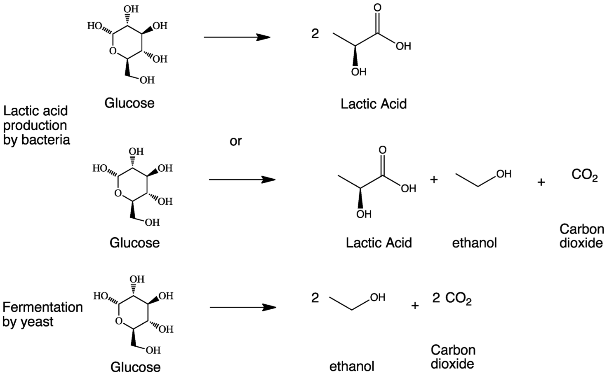
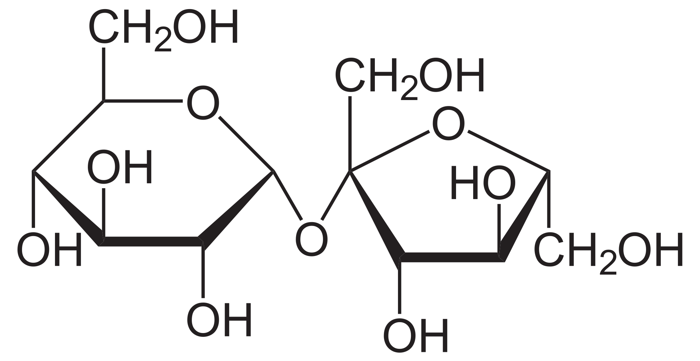
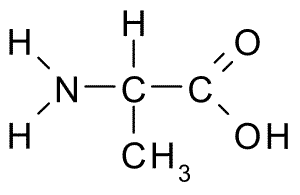

Magic of Pizza
Fermentation by Yeast
When making the pizza dough, the “magic” is when the dough rises. To do so, the main reaction is the fermentation of glucose via the baking yeast. To understand this reaction, similar reactions must be analyzed. Although all three reactions involve the breakdown, or fermentation, of the sugar glucose, a difference can be seen in the products, where the third reaction, fermentation by yeast, only has the products of ethanol and carbon dioxide. In this reaction, it can be seen that the formation of carbon dioxide, a byproduct, is the reason why the pizza dough rises; when gaseous carbon dioxide is formed, it creates pockets of air that pushes the dough to rise.
Image cited under references.
Fermentation of Glucose
Another major difference is that the top two reactions occur relatively quickly at a rate of once per second. However, the third reaction takes the longest—once every hour. Here, the shorter reaction times of the top two fermentation processes are more “efficient”, meaning that there is less time for a mistake to occur. Yet, in the third reaction, the higher chance of “mess-ups” has a surprising advantage. These “mess-ups”, or side reactions, lead to new flavor molecules that enhance the taste of the dough. As a result, the recommended time to develop the dough is one to two days. In this way, more flavor molecules can form from the “mess-ups” of the third reaction.
The Maillard Reaction and Caramelization
While the fermentation by yeast contributes to the light, fluffy, and flavorful pizza dough essential to any pizza, another reaction creates the crust and browned cheese that comprises the identity of pizza itself: a non-enzymatic process called the Maillard reaction. Named after the 19th century chemist Louis Camille Maillard who first observed the phenomenon, the Maillard reaction is when various foods form a golden-brown crust. More specifically, the Maillard reaction only occurs at high temperatures, around 140-165 °C, and it is when amino acids, or proteins, react with reducing sugars to produce a browning effect and to cultivate delicious flavors and aromas. In other words, the “magic” of the Maillard reaction occurs when the pizza is being baked.
| 
Image used under public domain. Example Sugar: Sucrose |

"Alanine.png by Borb is licensed under CC BY-SA 3.0 Example Amino Acid: Alanine |
{kind=link}
When looking at the Maillard reaction of pizza crust, sugars and amino acids are involved in three steps. Common sugars involved include glucose, sucrose, lactose, and maltose, and examples of amino acids involved include lysine, alanine, and proline. In the first step, sugars and amino acids start to condensate, or form a liquid at the high temperature. This stage is colorless, and is undetectable to the human eye. Second, both the sugars and amino acids begin to break down, wherein the sugars dehydrate and amino acids degrade. Here, a visible change can be seen, where the crust begins to turn light yellow. Third, the amino acids and sugars react, resulting in the polymerization of aldehyde-amine compounds and the creation of nitrogen compounds. In this stage the golden-brown crust is achieved, along with a myriad of savory flavors and aromas.

Image cited under references.
Example: Polymerization of Aldehyde-amine Compounds
In terms of the browning of cheese, a similar process occurs mainly through the Maillard reaction and also via a subsidiary caramelization reaction. Once again, with the Maillard reaction, sugars and amino acids rearrange to form a crust that reflects brown light—hence the golden-brown color visible to the human eye. Although less prominent, the non-enzymatic process of caramelization also occurs. Here, the high heat breaks sugar molecules apart, but this time, there is no interaction with amino acids. Rather, the oxidation of sugars contributes to the brown crust, and also produces its own host of sweet, nutty, and toasty flavors and aromas.